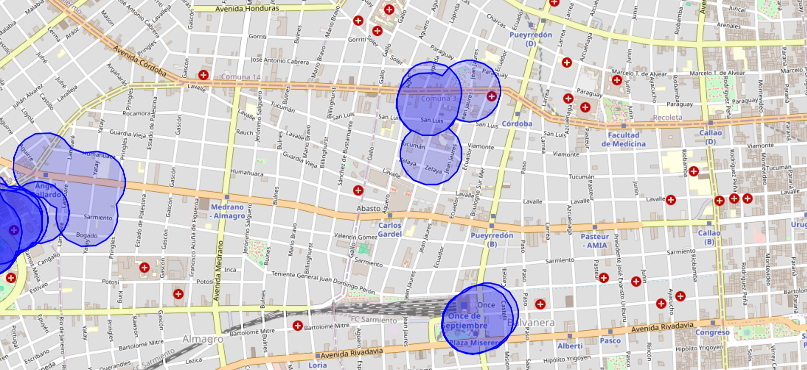
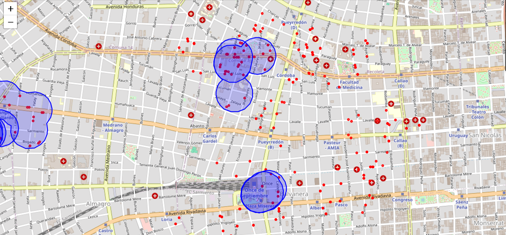

Telecom provider · Data Scientist · 2024
Geospatial Campaign Attribution
About 100 sellers walked the streets handing out flyers, each carrying a GPS-tracked phone. The sales team needed to know how many sales the campaign really generated, to decide whether to scale it or stop it.
~100
sellers tracked
100k+
GPS points (May–Sep 2024)
~30k
geolocated sales
15 days
attribution window
01Method
- BufferA 100 m buffer around every seller GPS point.
- Daily areasAreas built by joining 3+ points per seller per day.
- Spatial joinIntersect geolocated sales with the areas.
- AttributeA sale counts if it is inside an area and within 15 days after the visit.
Seller GPS point + 100 m bufferSale inside the area within 15 days → attributedSale outside → not attributed
02Output
- Table of daily areas per seller with polygon / multipolygon geometry
- Table linking each sale to its associated areas
- A Tableau dashboard: attributed sales, share of total sales, and a map of areas and sales
03Maps


04Impact
Continuous campaign tracking. The sales team can quantify the campaign's return and decide whether to scale the investment or stop and reallocate the budget.